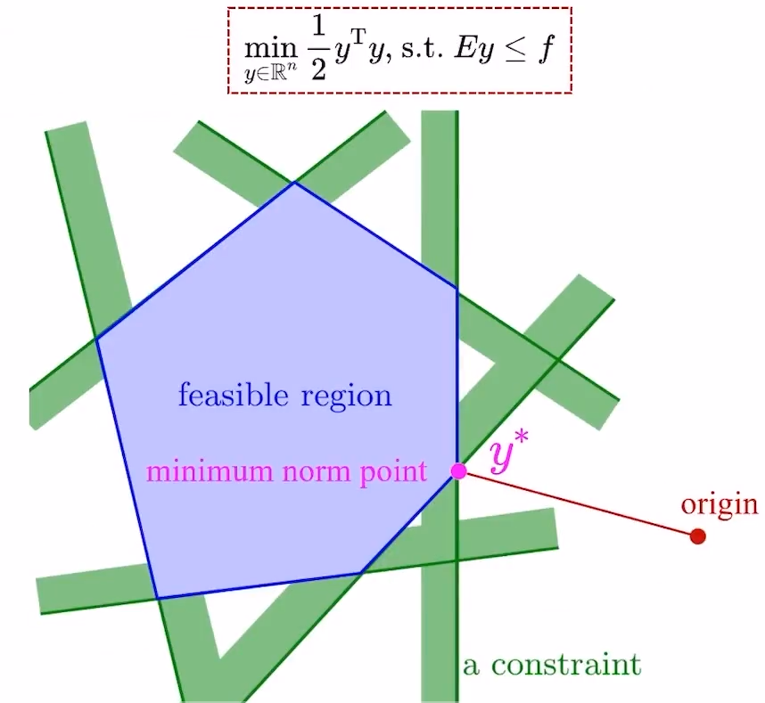
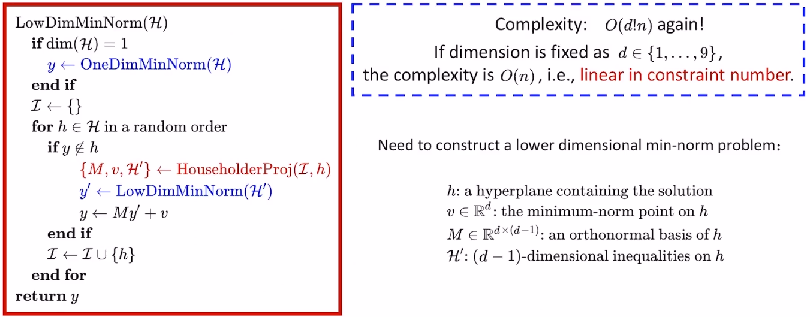
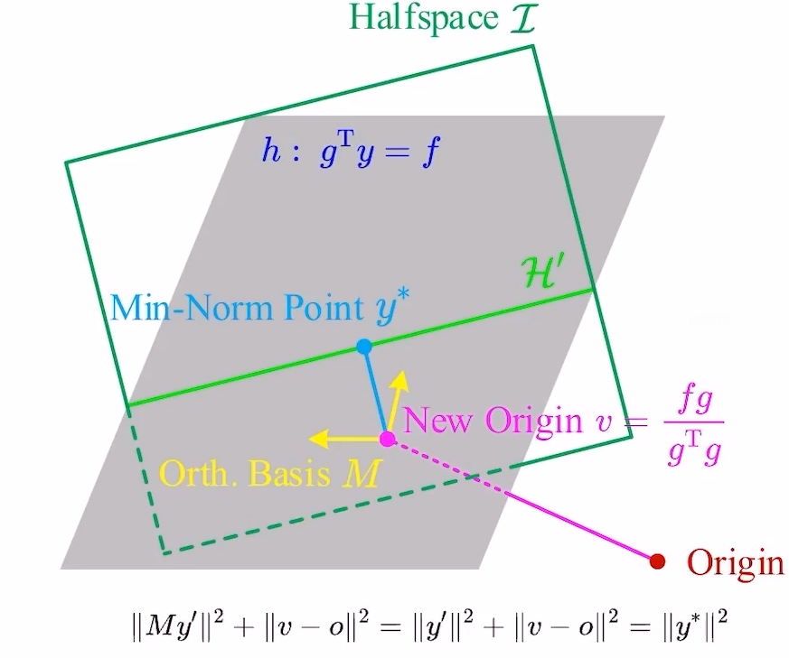
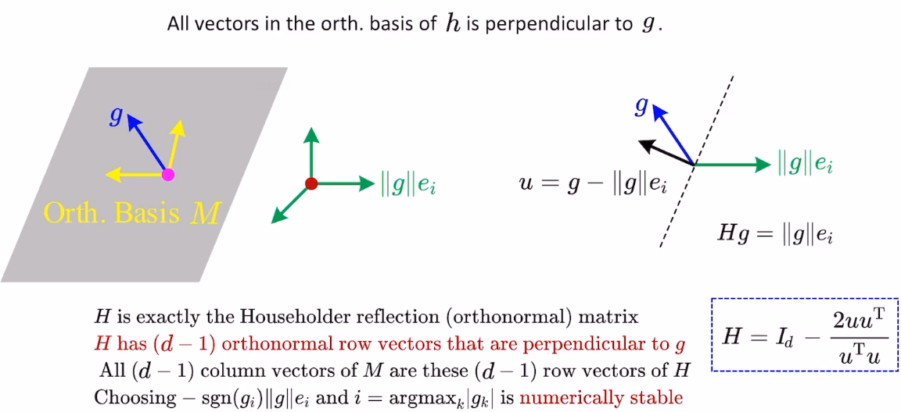

Low-Dimensional Quadratic Program
问题形式
- \(min_{x\in R^{n}}\frac{1}{2}x^{T}M_{Q}x+c_{Q}^{T}x,s.t. A_{Q}x<b_{Q} \)，其中，\(M_{Q} \)严格正定。
问题形式转化
- 由于\(M_{Q} \)严格正定，根据Cholesky factorization可得\(M_{Q}=L_{Q}L_{Q}^{T} \)，其中\(L_{Q} \)是一个下三角矩阵
- 令\(x=L_{Q}^{-T}y-(L_{Q}L_{Q}^{T})^{-1}c_{Q} \)，原问题转化为\(min_{y\in R^{n}}\frac{1}{2}y^{T}y,s.t.Ey\leq f \)，其中\(E=A_{Q}L_{Q}^{-T},f=A_{Q}(L_{Q}L_{Q}^{T})^{-1}c_{Q}+b_{Q} \)
- 至此，原QP问题转化为了minimum-norm问题，本质是在一个polytope中寻找最靠近原点的点

算法流程

- \(dim(H) \)指的是\(H \)列的维度，当维度降低到1维的时候，就可以直接求结果
- \(H’ \)是\(I \)投影到\(h \)后的结果，满足\(dim(H’)=dim(I)-1 \)
- \(v \)是原来的原点投影到\(h \)边界上得到的新的坐标
- 下图描述了HouseholderProj原理，本质上是将\(H \)进行降维，在一维空间求得解后升维恢复到原维度

- 灰色的超平面是算法流程图中的\(h \)，由于\(y\notin h \)，最优解\(y_{N}^{*} \)一定在其表面上。同时，\(y^{*}_{N} \)也需要满足超平面集合\(I \)的约束。
- 接下来要做的就是把当前的N维空间里的原点（N个0的向量）、超平面集合\(I \)（若干个\(Ax\leq b \)组成的集合，其中\(A \)是\(size=1*N \)的向量，\(b \)是标量），都投影到\(h \)上。原点投影得到\(v \)（依然是N维空间下的一个坐标，\(size=N*1 \)），\(I \)投影得到\(H’ \)（若干个\(Ax\leq b \)组成的集合，其中\(A \)是\(size=1*N-1 \)的向量，\(b \)是标量）。
- 然后我们在超平面\(h \)上以\(v \)为原点，以正交向量\(M \)为坐标轴新建一个N-1维的坐标系（这样做的意义是：在这个坐标系下的任何一个点，都在\(y\notin h \)平面上）。在这个新坐标系下，我们重新求解距离原点（N-1个0的向量）最近又满足约束\(H’ \)的点\(y_{N-1}^{*} \)，这里的\(y_{N-1}^{*} \)是以\(v \)为原点，以正交向量\(M \)为基的坐标系下的相对坐标，所以通过公式\(y_{N}^{*}=M\cdot y^{*}_{N-1}+v \)可以将N-1维空间里得到的解恢复到N维空间。
- 所以整个流程就是通过不断的投影，将问题降低到1维空间，得到解之后，再逐层恢复到N微空间。
- 现在有两个问题需要考虑，一是\(v \)如何求，二是\(M \)如何求
- \(v \)就是求超平面外一个点在超平面上的投影，公式在上图已经给出了
- \(M \)是超平面\(h \)上的一组标准正交基，我们已知超平面\(h \)的表达式为\(g^{T}y=f \)（这里的\(g^{T} \)等同于上面提到的\(A \)，同理\(f \)等同于\(b \)）。所以\(h \)的法向量是\(g \)，现在我们构造一组N维的向量\(\lbrace e_{0},e_{1},…,e_{N}\rbrace \)，其中\(e_{i} \)表示一个第\(e_{i} \)位为1，其他位都为0的N维向量。我们将\(e_{i} \)的模长缩放到\(\left|g\right| \)，通过旋转\(\left|g\right|e_{i} \)，使得其与\(g \)重合。将该旋转施加到\(e_{j},j\neq i \)上，\(e_{j} \)则贴合于超平面\(h \)。旋转变换的计算方式是通过householder reflection实现的，如下图所示。在实际操作中，\(e_{i} \)的模长缩放可以取负号，\(i \)选择\(g \)中绝对值最大的维度，有利于数值稳定。

复杂度分析
- \(O(n) \)，\(n \)是约束的个数
代码
#include <Eigen/Eigen>
#include <assert.h>
#include <cmath>
#include <iostream>
#include <tuple>
#include <typeinfo>
#include <vector>
int MaxId(const Eigen::VectorXd &h) {
int max_id = -1;
int id = 0;
double max_ele = std::numeric_limits<double>::lowest();
while (id < h.rows() - 1) {
double ele = std::abs(h(id));
if (ele > max_ele) {
max_ele = ele;
max_id = id;
}
id++;
}
assert(max_id >= 0);
return max_id;
}
double sign(double c) {
if (c >= 0.0) {
return 1.0;
}
return -1.0;
}
struct Constrains {
Constrains(int dim) {
A = Eigen::MatrixXd::Zero(0, dim);
b = Eigen::VectorXd::Zero(0);
}
Constrains(const Eigen::MatrixXd &_A, const Eigen::VectorXd &_b) {
assert(A.rows() == b.rows());
A = _A;
b = _b;
}
int dim() const { return A.cols(); }
int size() const { return A.rows(); }
void insert(const Eigen::VectorXd &_A, const double _b) {
A.conservativeResize(A.rows() + 1, A.cols());
A.row(A.rows() - 1) = _A;
b.conservativeResize(b.rows() + 1);
b(b.rows() - 1) = _b;
}
Eigen::MatrixXd A;
Eigen::VectorXd b;
};
bool OneDimMinNorm(const Constrains &H, Eigen::VectorXd *y) {
assert(H.A.cols() == 1);
double low = std::numeric_limits<double>::lowest();
double up = std::numeric_limits<double>::max();
for (int i = 0; i < H.A.rows(); ++i) {
if (H.A(i, 0) > 0) {
up = std::min(up, H.b(i) / H.A(i, 0));
} else if (H.A(i, 0) < 0.0) {
low = std::max(low, H.b(i) / H.A(i, 0));
}
}
if (low > up) {
return false;
}
(*y)(0) = std::min(up, std::max(0.0, low));
return true;
}
std::tuple<Eigen::MatrixXd, Eigen::VectorXd, Constrains>
HouseholderProj(const Constrains &I, const Eigen::VectorXd &g, double f) {
int dim = g.rows();
// calcualte origin v
Eigen::VectorXd v(dim);
v = (f * g) / g.dot(g);
// calcualte orth basis M
int max_id = MaxId(g);
Eigen::MatrixXd e = Eigen::MatrixXd::Identity(dim, dim);
e(max_id, max_id) = (-sign(g(max_id)) * g.norm());
Eigen::VectorXd u = g - e.col(max_id);
Eigen::MatrixXd H = Eigen::MatrixXd::Identity(dim, dim) -
2.0 * u * u.transpose() / (u.dot(u));
Eigen::MatrixXd transformed_e = H.transpose() * e;
double dist = (transformed_e.col(max_id) - g).norm();
assert(dist <= 0.0000001);
Eigen::MatrixXd M(dim, dim - 1);
M << transformed_e.leftCols(max_id),
transformed_e.rightCols(dim - max_id - 1);
// calcualte H_dot
Constrains H_dot(I.A * M, I.b - I.A * v);
return std::make_tuple(M, v, H_dot);
}
bool InConstrain(const Eigen::VectorXd &A, const double b,
const Eigen::VectorXd &y) {
assert(A.rows() == y.rows());
return A.dot(y) <= b;
}
// H: {a.T * x <= b}
bool LowDimMinNorm(const Constrains &H, Eigen::VectorXd *y) {
*y = Eigen::VectorXd::Zero(H.dim());
if (H.size() == 0) {
return true;
}
if (H.dim() == 1) {
return OneDimMinNorm(H, y);
}
Constrains I(H.dim());
for (int j = 0; j < H.size(); ++j) {
if (!InConstrain(H.A.row(j), H.b(j), *y)) {
Eigen::MatrixXd M;
Eigen::VectorXd v;
Constrains H_dot(H.dim() - 1);
std::tie(M, v, H_dot) = HouseholderProj(I, H.A.row(j), H.b(j));
Eigen::VectorXd y_dot(H.dim() - 1);
if (!LowDimMinNorm(H_dot, &y_dot)) {
return false;
}
*y = M * y_dot + v;
}
I.insert(H.A.row(j), H.b(j));
}
return true;
}
int main() {
const int d = 3;
int m = 7;
Eigen::Matrix<double, 3, 3> Q;
Eigen::Matrix<double, 3, 1> c;
Eigen::Matrix<double, 3, 1> x; // decision variables
Eigen::Matrix<double, -1, 3> A(m, 3); // constraint matrix
Eigen::VectorXd b(m); // constraint bound
Q << 2.0, 1.0, 1.0, 1.0, 2.0, 1.0, 1.0, 1.0, 2.0;
c << 1.2, 2.5, -10.0;
A << 1.0, 0.0, 0.0, 0.0, 1.0, 0.0, 0.0, 0.0, 1.0, -0.7, 0.5, 0.0, 0.5, -1.0,
0.0, 0.0, 0.13, -1.0, 0.1, -3.0, -1.3;
b << 10.0, 10.0, 10.0, 1.7, -7.1, -3.31, 2.59;
// 将qp问题转化为min norm问题
Eigen::LLT<Eigen::Matrix<double, d, d>> llt(Q);
if (llt.info() != Eigen::Success) {
std::cout << "infinity\n";
return 0;
}
const Eigen::Matrix<double, -1, d> As =
llt.matrixU().template solve<Eigen::OnTheRight>(A);
const Eigen::Matrix<double, d, 1> v = llt.solve(c);
const Eigen::Matrix<double, -1, 1> bs = A * v + b;
// 求解min norm问题
Constrains H(As, bs);
Eigen::VectorXd z(H.dim());
if (LowDimMinNorm(H, &z)) {
llt.matrixU().template solveInPlace<Eigen::OnTheLeft>(z);
z -= v;
std::cout << "optimal sol: " << z.transpose() << std::endl;
std::cout << "minobj: " << 0.5 * (Q * z).dot(z) + c.dot(z) << std::endl;
std::cout << "cons precision: " << (A * z - b).maxCoeff() << std::endl;
} else {
std::cout << "infeasible\n";
}
return 0;
}